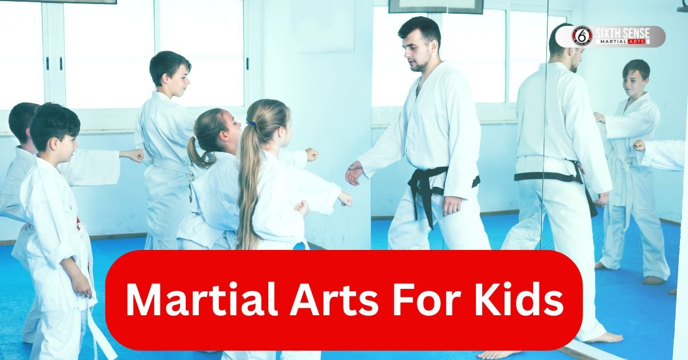
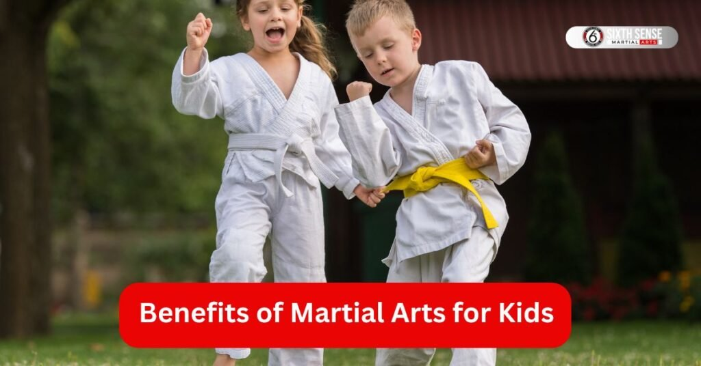
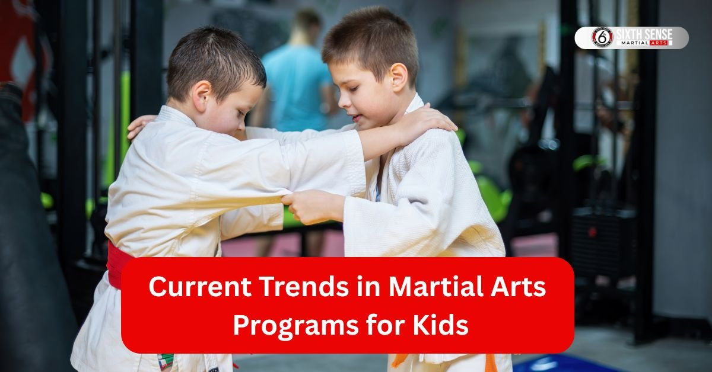

Martial Arts for Kids Building Strength and Confidence join classes today

You’re wondering what martial arts for kids is all about you’re in the right spot. These programs are designed to help kids grow strong confident and ready to tackle life’s challenges. Think of it as more than just kicks and punches it’s a fun way for kids to learn self defense while picking up life skills. Parents often notice how martial arts training turns shy kids into bold ones and it’s all about building a solid foundation early on.
What Are Martial Arts for Kids?
So what exactly are martial arts for kids? At its core it’s a structured activity where young ones learn moves like karate or judo in a safe supportive setting. These classes focus on teaching self control and concentration giving kids a chance to stay active while mastering new skills. Unlike random playtime martial arts programs follow a clear path helping kids learn self defense and build confidence step by step. Whether it’s at a local dojo or a place like the sixth sense mma the goal is to create a space where kids love coming back for more.
Principles Behind These Programs
Let’s talk about what drives these classes. One big principle is self mastery kids work on controlling their actions and emotions. Another key idea is physical fitness blending fun movements and focus to keep them engaged. Teachers or sensei also emphasize camaraderie encouraging kids to support each other. It’s all about creating a positive vibe where students learn respect and discipline naturally.
How They Differ from Adult Training
Now how do these classes differ for kids versus adults? For starters kids’ sessions are lighter and more playful focusing on individual growth rather than intense competition. Adult training often dives deep into grappling techniques or ground fighting which can be too much for younger bodies. Kids’ classes also help kids stay active with simpler kicking techniques while adults might push harder on skill level. It’s tailored to be age friendly and fun!
Benefits of Martial Arts for Kids
Wondering why martial arts for kids is such a hit? The perks are huge! It’s not just about learning to punch or grapple it’s a full package that boosts their body and mind. Parents see real changes like better focus or even handling bullies with self confidence. Let’s break it down to see what makes it so special for young learners.
Physical Health Gains
First off these classes are a fantastic way for kids to stay active. Running around practicing taekwondo kicks or trying bjj moves gets their hearts pumping. It builds strength and flexibility helping kids who enjoy physical activity thrive. Plus it’s a solid start young for lifelong fitness habits way better than sitting glued to a screen!
Mental and Emotional Growth
On the mind side martial arts training works wonders. Kids learn self control which calms those wild energy bursts. It also helps kids build confidence as they master new moves like judo throws. Emotionally it teaches them to handle tough moments turning shy kids into ones who stand tall with self defense skills in their back pocket.
Social Skills Development
Then there’s the teamwork factor. In class kids work with others building camaraderie and making friends. They practice respect for their sensei and peers which spills over into school life. It’s a great choice for kids who enjoy connecting turning solo practice into a group adventure that boosts their social game.

Popular Types of Martial Arts for Kids
Curious about the different types of martial arts for kids? There’s a bunch to explore each with its own flavor! From high flying kicks to ground based moves these styles offer something for every kid. Whether your child loves action or wants to try something new martial arts styles like karate or bjj can fit the bill. Let’s check out some favorites that parents and kids rave about today.
Karate Basics
Karate is a classic pick for kids martial arts. It focuses on individual growth with sharp controlled movements. Kids learn basic kicks and punches building physical and mental strength. Classes often start with simple forms helping kids stay active while picking up self defense skills. It’s a solid way for kids to build confidence in a traditional martial arts setting!
Taekwondo Features
Taekwondo brings some excitement with its focus on kicking techniques. This martial art for your child emphasizes speed and agility perfect for energetic kids. Students practice high kicks and blocks boosting physical fitness while learning self control. It’s a popular choice for kids who enjoy dynamic moves and want to shine in class.
Judo Techniques
Judo offers a unique approach with its grappling and throwing focus. Here’s how kids learn it:
- They start with balance drills to stay steady.
- Next they practice gentle throws to build skill level.
- Finally they work on ground fighting basics safely. This style teaches kids to use an opponent’s force helping them develop self mastery and strength without striking.
Aikido Approaches
Aikido takes a calmer route focusing on individual growth through redirection. Kids learn to blend with an attacker’s energy using flowing movements instead of force. It’s great for building confidence and teaching self defense without heavy contact. This martial art helps kids stay active while mastering peaceful techniques.
Brazilian Jiu Jitsu Methods
Brazilian jiu jitsu or bjj is all about ground fighting and grappling techniques. Kids learn to control situations from the floor which builds physical and mental resilience. Classes focus on technique over strength making it ideal for different types of martial arts learners. It’s a fantastic way for kids to gain self confidence through practical skills.
Muay Thai Elements
Muay Thai adds a punch with its blend of fitness and striking. Kids practice kicks elbows and knee strikes staying active while learning self defense. This martial art for kids mixes traditional moves with modern training helping them build strength. It’s a fun choice for kids who enjoy a bit of intensity!
Choosing the Best Martial Arts for Your Child
Picking the right martial arts for your kids can feel like a big decision but it doesn’t have to be stressful. Every child is different and finding a fit depends on what they enjoy and need. Whether it’s karate or bjj the goal is to help kids build confidence while having fun. Let’s walk through some ideas to make this choice easier for you and your little one.
Factors Based on Age and Personality
Age and personality play a huge role here. A shy kid might love aikido for its gentle approach while an energetic one could thrive with taekwondo’s kicks. Younger kids maybe around ages 7 do better with simpler moves while older ones can handle judo’s grappling. Think about what lights up your child do they like teamwork or solo focus? That can guide you to the best martial arts match.
Starting at Ages 7 and Up
Starting martial arts at ages 7 is a great time to jump in. Kids this age are ready to learn self control and concentration without it feeling overwhelming. Classes for kids focus on fun basics like kicking techniques setting them up for growth. It’s a perfect way to start young building physical fitness and confidence that sticks with them.
Matching Styles to Goals
What do you want for your child? If it’s self defense skills bjj or judo might be ideal with their grappling techniques. For physical activity taekwondo’s high energy works well. Maybe you’re aiming for life skills like self mastery karate could be the way. Pick a style that lines up with your goals and watch your kid shine!
Common Challenges Without Martial Arts Training
Without martial arts some kids face tough spots that could hold them back. It’s not just about missing out on kicks or punches there’s more to it. These programs offer a way to tackle everyday struggles like staying focused or feeling good about themselves. Let’s look at what can happen and why martial arts for kids might be a game changer.
Issues with Focus and Discipline
Some kids struggle to sit still or follow rules without guidance. Without martial arts class this can turn into trouble at school or home. These programs teach self control giving them a structure to channel energy. It’s amazing how a little training can help kids learn to pay attention and stay on track.
Handling Bullying or Low Self Esteem
Bullying can hit hard and without confidence kids might feel stuck. Low self esteem can grow if they don’t know how to stand up for themselves. Martial arts training brings self defense skills and builds self confidence turning unsure kids into ones who face challenges head on. It’s a solid way to help kids stay strong inside and out.
Current Trends in Martial Arts Programs for Kids
Martial arts programs for kids keep evolving and right now in 2025 things are getting even more exciting. Parents want options that mix real skills with everyday fun and gyms are stepping up. From adding tech like video tools to family style sessions these shifts make training feel fresh and connected. It’s all about keeping kids engaged while they pick up self defense and focus perfect for busy families today.
Blending Fun with Skill Building
Gyms are smartly mixing play into the mix these days. Think games that sneak in grappling or kicks so kids build skills without it feeling like work. Hybrid classes blending bjj with muay thai moves keep things lively. And with video analysis kids see their progress right away which amps up the joy. This approach helps them stay active and hooked on martial arts training.
Family Involvement Options
Family tie ins are huge too parents joining in for parent child workshops builds bonds and teamwork. Discounted packages let siblings or whole crews train together turning it into a group adventure. It’s a simple way to share the confidence boost and kids love showing off what they learn at home.

Martial Arts Classes at Sixth Sense MMA
At Sixth Sense MMA in Coppell we make martial arts for kids straightforward and rewarding. Our brazilian jiu jitsu focus fits right into those trends with classes that blend fun drills and real techniques. Led by coach Mattheus Galvao these sessions help kids from beginners to pros grow strong and sure of themselves. It’s a welcoming spot where every child finds their groove.
Intro to Jiu Jitsu for Beginners
New to this? Our intro class eases kids in with basic rolls and holds keeping it light and game like. They learn simple self defense moves while laughing through partner drills. It’s designed for little ones starting out building that first spark of confidence without any pressure.
Little Champions Level
For our Little Champions we ramp up the energy with fun challenges that teach control and flow. Kids practice safe escapes and positions mixing in team games to sharpen focus. It’s where they start seeing how martial arts class can boost their school smarts too.
Rising Champions Advanced
Bigger kids in Rising Champions dive into sharper strategies like chaining grapples for real scenarios. We add video reviews to spot wins and tweaks prepping them for belts and beyond. This level turns practice into passion with plenty of high fives along the way.
Why Martial Arts at Sixth Sense MMA Stands Out
If you’re scouting for martial arts for kids Sixth Sense MMA in Coppell really shines in a crowded field. It’s not your average spot think welcoming vibes mixed with real skill building that sticks. Parents keep coming back because the place feels like family and kids actually look forward to showing up. What sets it apart? That tight knit group feel paired with coaching that delivers noticeable changes all wrapped in a clean modern setup right next door to a coffee shop for those quick parent pit stops.
Community and Support Focus
The heart of Sixth Sense MMA beats in its community setup. Kids train in small groups where everyone cheers each other on turning strangers into buddies fast. Support comes from day one with instructors spotting what each child needs and adjusting right there. It’s all about that inclusive push no one gets left behind whether they’re shy or full of energy. Families love the open mat days too where siblings or parents jump in together making it a shared adventure that builds lasting bonds.
Expert Coaching with Real Results
Coaches like Mattheus Galvao bring years of hands on experience focusing on practical moves that kids can use right away. They don’t just drill techniques; they tie in life lessons like staying calm under pressure. Results show up quick kids walk taller handle school stuff better and even chat about feeling safer. One parent shared how their son went from dodging bullies to standing his ground all thanks to these tailored sessions that blend bjj basics with everyday grit.
Our Training Process Explained
At Sixth Sense MMA the whole training flow is straightforward and kid friendly starting slow and ramping up as confidence grows. It’s built around daily classes that fit busy schedules emphasizing fun drills over tough grinds. Whether your child is dipping toes into martial arts programs or leveling up the process keeps things clear and exciting. No guesswork here just steady steps that turn beginners into proud little grapplers.
First Session Walkthrough
Your kid’s first go at Sixth Sense MMA kicks off with that free trial no strings attached. They arrive get a quick tour of the mats and slip into a gi if needed. The coach chats about goals then eases into warm ups like light rolls or basic guards. It’s all playful at first focusing on fun escapes and smiles wrapping up with a chat on what they liked. Most kids leave buzzing ready for more.
Progress Tracking Steps
Keeping tabs on growth is simple and hands on. Coaches note skills weekly like better guard passes or quicker reactions sharing chats with parents at pickup. Kids get belts or stripes as milestones celebrating those “aha” moments. It’s not rigid just regular check ins to tweak things ensuring steady wins in strength and smarts. Over months you see the shift from hesitant tries to smooth flows.
How We Compare to Other Gyms
Shopping around for martial arts classes? Sixth Sense MMA holds its own against the usual suspects in Coppell and beyond. We’re talking smaller crowds sharper focus on bjj for kids and that personal touch you won’t find in every strip mall dojo. Sure big chains might flash flashy ads but when it comes to real progress in self defense or confidence the details matter. Here’s a quick side by side on what tips the scales our way.
Class Size and Attention Differences
Bigger gyms often pack in 20 plus kids per session leaving little room for one on one tweaks. At Sixth Sense MMA we cap groups at 10 or so so coaches like Mattheus can spot form issues or hype up a hesitant kid right then. It’s night and day your child gets heard not lost in the shuffle. Parents tell us this setup speeds up gains in moves like basic guards making classes feel custom built.
Program Variety Edges
Many spots stick to one style like basic karate drills but we mix in bjj grappling with open mats for free play. That keeps things fresh for kids who get bored easy. Compared to cookie cutter programs ours layers in family sessions and skill tweaks for ages 7 up giving more paths to build physical and mental toughness. No wonder families stick around longer here.
Ongoing Help After Joining
Signing up at Sixth Sense MMA isn’t a one and done deal it’s the start of real support that keeps kids hooked and growing. We roll out tools and check ins to smooth any bumps from technique slips to motivation dips. Think email tips on home drills or quick chats during pickup. It’s that steady hand that turns casual sign ups into lifelong habits all while fitting into your packed calendar.
Access to Resources
Once in families tap into our online hub packed with drill videos and nutrition bites tailored for young grapplers. Need a refresher on a judo roll? It’s there plus forums for parent Q&A. We even share belt progress trackers via app so you see wins in real time. This stuff bridges class days helping kids practice safely at home without the guesswork.
Event and Update Details
Stay in the loop with monthly newsletters on upcoming scrimmages or holiday camps that blend fun with skill sharpening. We host parent nights too where you watch sessions and grab tips over coffee next door. Updates hit your inbox weekly think class tweaks or guest coach spots keeping everyone pumped. It’s low key ways to stay connected and celebrate those small victories together.
Customer Reviews
Stacie Arce
“My son has been coming since December and grown so much. Coach Matheus is a jiu jitsu master from Brazil but more important than that, he is a skilled coach. He really makes the place special.”
Danilo De souza
“Family friendly and professional. My kids love Coach Matheus and Coach Milly. They’ve grown so much in confidence and discipline learning with them! 100% recommended!”
Márcio Rabelo
“Such a good vibe at this gym. Everyone’s super friendly and the coaches really know their stuff. It’s one of those places you feel comfortable right away with Coach Matheus, great mix of hard work and fun. Definitely worth checking out if you’re into Jiu Jitsu!”
juwaryiyya
“Extremely welcoming staff, the coach explained everything so well. It is the favorite part of my day! I also feel very comfortable as a Muslim woman because of how the room is shaped like an L giving privacy and comfort for sisters.”
Kaivan Askari
“Professor Matheus is amazing with the kids. His children’s classes are amazing. He also has a very consistent teaching style for adults as well.”
Contact Us
Got a question or ready to start your journey? Our team at Sixth Sense MMA is here for you, day or night. Located at 817 S MacArthur Blvd #100, Coppell, TX 75019, we’re just a step away. Ring us up at 469-972-7800 or shoot an email to info@sixthsensemma.com someone’s always around to chat. Need a quick answer? Drop by during our open hours, and we’ll sort you out. Our crew loves helping, whether it’s about classes or that free trial you’ve been eyeing. If any doubt pops up, don’t wait reach out, and let’s get you moving!
Conclusion
Wrapping up this journey through martial arts for kids feels like a high-five to all the possibilities ahead. We’ve chatted about how styles like karate or bjj can boost physical and mental strength, especially for ages 7 and up at Sixth Sense MMA. From tackling focus issues to building self-confidence, these classes offer a solid path for growth.
Follow Us on Social Media
Stay connected with Sixth Sense MMA through our social media channels. Follow us for class updates, training tips, and a closer look at our self defense community.
FAQ’s
Children can begin training as early as age 7. Our beginner-friendly programs focus on fun, fitness, and foundational self-defense skills suited to each age group.
Martial arts training teaches kids self-control, focus, and goal setting. As they master new moves, they gain confidence, learning to stay calm under pressure both in and out of class.
We specialize in Brazilian Jiu Jitsu (BJJ) for kids, blending ground fighting and self-defense skills. Classes also introduce elements from Judo and Muay Thai for a complete experience.
Kids’ classes are lighter, playful, and focus on personal growth over competition. Training is structured to be safe, encouraging teamwork, and building skills through fun activities.
Kids develop strength, focus, discipline, and confidence while staying active. Martial arts also help with social skills, respect for others, and improved performance in school.
Train with us in Coppell
The first class is free. Shorts, a t-shirt and a water bottle. We lend the rest.
Book a free class